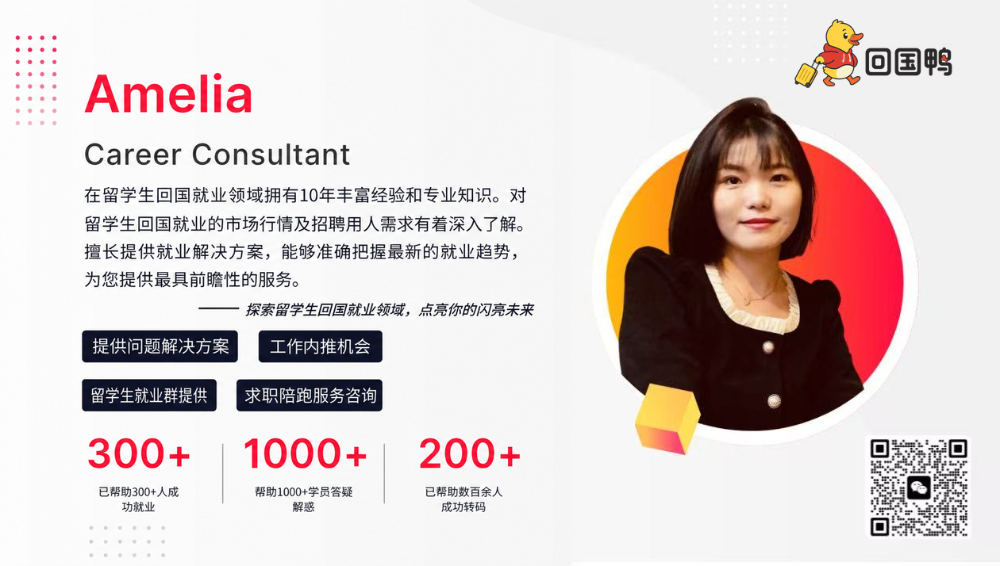

回国鸭 · 给澳洲留学生的回国求职手册
2026 澳洲留学生回国就业
40 城机会地图
回国先去哪个城市？这本手册把 40 座城市的岗位方向、落户证据和生活约束放在一起，帮你筛出最值得先投的 3 座城。
40 城求职方向先看懂政策条件分开核对按专业找目标城市直接打开官方入口
40-CITY NAVIGATION
按专业，先找到值得看的城市组
先找到与你目标岗位匹配的城市组，再用相邻城市作对照，不要一开始就逐城细读。
先记住：城市组只帮你缩小范围，不是排名。境外学历先准备留服认证，其他资格以当期公告为准；卡片里的雇主只是检索起点，是否在招以单位官网当天页面为准。
总部 / 金融 / 专业服务
先看：北京、上海、深圳、广州。
成本备选：南京、杭州、天津、青岛。
IT / 产品 / 数据 / 内容
先看：深圳、杭州、上海、北京。
产业备选：成都、南京、武汉、合肥。
制造 / 工程 / 供应链
先看：苏州、无锡、深圳、东莞。
区域备选：武汉、青岛、西安、重庆、长春、沈阳。
外贸 / 跨境 / 港航
先看：上海、广州、深圳、宁波、厦门、青岛。
区域备选：福州、大连、海口。
央国企 / 地方国企
先看：北京、南京、济南、武汉、西安、重庆。
区域备选：郑州、南昌、乌鲁木齐、西宁。
回家庭城市 / 区域落地备选
可看南昌、哈尔滨、福州、昆明、贵阳、南宁、银川、呼和浩特等，再确认当地是否有与你匹配的真实岗位。
证据核验日期：2026-08-04。申请当天仍须打开动态附录和原始页面确认政策有效期、窗口及岗位状态。
40-CITY ALIGNED FILES · 01–02
北京 · 天津
北京
总部、科研和专业服务岗位最密，适合把平台与职业上限放在首位的人。
岗位产业央企总部、科研院所、AI、金融、咨询、专业服务。
雇主检索起点国家电网、中国移动、中信集团、京投公司、首钢集团。
可用支持普通求职者不把现金补贴计入预算；优先使用市区两级公共招聘、留学人员服务和人才住房项目。
还要确认就业落户须逐项核留学时间、回国年限、年龄、单位和社保；应届身份按当次招聘公告认定。
生活约束岗位集中、居住成本高；先用通勤时间和税后可支配收入筛选工作区。
天津
北方低门槛落户与先进制造岗位的折中选项。
岗位产业半导体、航空航天、先进制造、港航物流、金融后台。
雇主检索起点天津港（集团）有限公司、渤海银行股份有限公司、中芯国际集成电路制造（天津）有限公司、天津航空有限责任公司、天津渤海化工集团有限责任公司。
可用支持住房、购房和区级支持分别按滨海新区或工作所在区办理，不把宣传金额视为全市统一待遇。
还要确认公共招聘与企业校招的毕业时间窗口分别按公告执行。
生活约束滨海新区与中心城区距离大，先核岗位实际工作地、班车和租住区。
40-CITY ALIGNED FILES · 03–04
石家庄 · 太原
石家庄
医药、钢铁装备和省属单位是主线，人才政策价值与院校、单位和项目资格绑定。
岗位产业生物医药、钢铁、装备、能源、省属国企。
雇主检索起点石药集团、以岭药业、河钢集团、华北制药、河北建投。
可用支持普通海外硕士先看人才绿卡B卡、单位人才项目和公共就业服务；涉及院校排名的支持只按当期目录认定。
还要确认“世界前500”等资格以项目列明的榜单、年份和毕业时间为准。
生活约束岗位集中在医药园区、钢铁和省属单位，先确认工作区与跨区通勤。
太原
能源与装备岗位辨识度高；省级公开政策曾明确覆盖留学归国人员，太原当前办理口径仍须核验。
岗位产业能源、钢铁、装备制造、轨道交通、省属国企。
雇主检索起点太钢集团、太重集团、晋能控股在并单位、山西焦煤、晋商银行。
可用支持已找到省级人才补助公开信息，但未找到能证明 2026 年太原具体待遇与申报窗口的直接文件；现阶段不要把补贴计入回国预算。
还要确认省级落户政策明确放开留学归国人员限制；具体材料按太原公安当期事项核对。人才待遇仍须查看当期申报通知。
生活约束能源与制造岗位常在园区或项目现场，先核轮班、驻场和通勤条件。
40-CITY ALIGNED FILES · 05–06
沈阳 · 大连
沈阳
航空、汽车和工业软件构成清晰岗位组合。
岗位产业航空军工、汽车、软件、机器人、工业数字化。
雇主检索起点航空工业沈飞、华晨宝马、东软集团、通用技术沈阳机床、盛京银行。
可用支持兴沈英才等项目按就业、社保、学历和住房条件分项办理；境外高校毕业生按文件要求提供认证。
还要确认军工岗位另有国籍、政审和保密要求。
生活约束航空制造岗位地点相对集中，求职时同时核对产业区、班车和冬季通勤。
大连
船舶、软件服务、港航和日韩业务比通用互联网岗位更有优势。
岗位产业船舶海工、软件服务、日韩外包、港航物流、装备制造。
雇主检索起点大连船舶重工集团有限公司、中远海运重工有限公司、东软集团股份有限公司、辽宁港口集团有限公司。
可用支持高校毕业生住房支持按就业、社保、住房状态办理；先核当期申请页面和发放周期。
还要确认应届窗口按用人单位公告。
生活约束软件园、开发区、港区分布较散，先确认工作地和是否需要跨区通勤。
40-CITY ALIGNED FILES · 07–08
长春 · 哈尔滨
长春
汽车、轨交和光电产业明确，公共招聘与高校毕业生住房支持已有可操作入口。
岗位产业汽车、轨道交通、光电、装备制造、医药。
雇主检索起点中国一汽、中车长客、长光卫星、国网吉林电力、修正药业。
可用支持毕业五年内、符合就业合同和社保条件的高校毕业生可查购房补贴；硕士档以当期申报细则为准。
还要确认2026事业单位公告对符合毕业时间条件且未就业的留学回国人员设置报考口径，须在规定节点取得学位与认证。
生活约束汽车和轨交岗位多在产业区，先核园区位置、班车和岗位轮班要求。
哈尔滨
航空航天、装备和科研单位是核心，认证境外学历可进入相应学历层次的人才事项。
岗位产业航空航天、装备制造、科研、冰雪文旅、省属国企。
雇主检索起点哈电集团、航空工业哈飞、哈药集团、龙江森工、哈尔滨银行。
可用支持人才新政对博士、硕士等分档设置安家和生活支持，申请同时核合同、社保、年龄和首次就业条件。
还要确认事业单位、国企和人才项目分别执行自己的毕业时间与材料节点。
生活约束冬季通勤成本高、岗位面相对集中，先确认单位稳定性和长期生活接受度。
40-CITY ALIGNED FILES · 09–10
上海 · 南京
上海
金融、消费、航运、生物医药和集成电路共同构成最完整的职业市场。
岗位产业金融、消费、航运、生物医药、集成电路、专业服务。
雇主检索起点上海汽车集团股份有限公司、上海浦东发展银行股份有限公司、上海电气集团股份有限公司、上海临港经济发展（集团）有限公司、上海机场（集团）有限公司。
可用支持普通求职阶段使用乐业上海、区级人才服务与人才公寓；专项资助只按项目资格申请。
还要确认落户中的院校名单、社保基数和时间要求按现行规定匹配。
生活约束居住和通勤成本高，先确定工作区再选择租住区，并设置税后收入底线。
南京
软件、电子、生物医药、金融和公共部门较均衡。
岗位产业软件、电子、生物医药、科研、金融、市属国企。
雇主检索起点南京银行股份有限公司、江苏银行股份有限公司、江苏交通控股有限公司、中国石化扬子石油化工有限公司、国电南瑞科技股份有限公司。
可用支持宁聚计划生活和租房支持按就业、社保和住房条件办理；科技项目资助不是普通硕士普惠待遇。
还要确认省考、事业单位和企业校招分别看当次公告的应届时间。
生活约束河西、江北、江宁和软件谷岗位分布不同，先按工作区核通勤。
40-CITY ALIGNED FILES · 11–12
苏州 · 无锡
苏州
外企与先进制造密度高，英语和跨文化经验容易转换为岗位优势。
岗位产业半导体、生物医药、装备制造、供应链、工业软件。
雇主检索起点博世汽车部件（苏州）有限公司、三星电子（苏州）半导体有限公司、苏州银行股份有限公司、苏州创元投资发展（集团）有限公司。
可用支持生活、租房与购房支持按园区、姑苏、昆山等工作所在区分别执行，不能跨区套用。
还要确认外企校招和社会招聘各自定义毕业时间。
生活约束园区、昆山、吴中等产业区跨度大，先按工作地选择居住点。
无锡
集成电路和物联网是最清晰的优势，适合理工产业链求职。
岗位产业集成电路、半导体设备、物联网、先进制造、新能源。
雇主检索起点华虹无锡、SK海力士系统集成电路、无锡产业发展集团、华光环能、先导智能。
可用支持购房型支持与到岗现金不同；先按人才分类、就业区和购房条件判断是否可用。
还要确认学历落户材料以无锡公安当前办事指南为准；人才支持另核工作区、人才分类和申报批次。
生活约束产业岗位多在新吴区、锡山和惠山，核对园区位置与通勤后再定居。
40-CITY ALIGNED FILES · 13–14
杭州 · 宁波
杭州
平台、电商、内容、游戏和数字服务岗位强，重视工具与数据证据。
岗位产业电商、平台、内容、游戏、跨境、数字服务。
雇主检索起点阿里巴巴、网易、海康威视、物产中大、浙江大华。
可用支持应届生活补贴和租房补贴分别看毕业年限、工作单位、社保和住房状态。
还要确认毕业五年内回国人员可按具体项目的毕业时间定义申请。
生活约束岗位与居住成本差异大，先按滨江、余杭、钱塘等工作区核算通勤。
宁波
港航、外贸、制造和民营经济突出，政策常按院校榜单分档。
岗位产业港航物流、外贸、汽车零部件、制造、金融。
雇主检索起点宁波舟山港、宁波银行、宁波通商银行、吉利宁波基地、均胜电子。
可用支持就业和生活支持按毕业时间、院校名单、单位与社保分档；前100等条件只按项目公布名单。
还要确认先核户籍迁移细则是否接受留服认证学历，再核工作所在地的人才项目是否仍在申报期。
生活约束产业岗位跨宁波城区、北仑和周边县市，先核工作地和港区通勤。
40-CITY ALIGNED FILES · 15–16
合肥 · 南昌
合肥
半导体、显示、AI和新能源岗位强，适合先按产业能力筛岗位。
岗位产业半导体、显示面板、AI、新能源汽车、科研产业化。
雇主检索起点长鑫存储、京东方合肥、科大讯飞、江汽集团、阳光电源。
可用支持高校毕业生租房支持按年龄、就业、社保和住房状态申请；金额以合肥先锋网和当期申报页面为准。
还要确认安徽公共招聘对海外毕业生的应届认定以毕业、认证和未就业状态为条件。
生活约束产业岗位多在高新区、经开区和新站区，先按园区核通勤与租住。
南昌
航空、电子信息、铜产业和省属国企构成清晰岗位池。
岗位产业航空、电子信息、铜产业、汽车、省属国企。
雇主检索起点江西铜业、航空工业洪都、江西国控、江西交投、华润江中。
可用支持留学归国人员落户已有有效公安办法；生活、租房和购房支持须分别按当期实施方案核首次来昌就业、社保与住房状态。
还要确认境外学历须认证；首次来昌就业与应届身份是不同概念，分别按政策和招聘公告判断。
生活约束岗位集中在航空城、高新区和省属单位，先核园区位置和专业匹配。
40-CITY ALIGNED FILES · 17–18
青岛 · 济南
青岛
海洋、轨交、家电、港航和外贸岗位突出，留学人才服务入口集中。
岗位产业海洋产业、轨道交通、家电、港航、外贸、日韩业务。
雇主检索起点海尔智家、海信集团、山东港口青岛港、中车四方、青岛啤酒。
可用支持住房、安家与人才服务项目分别按学历、就业、社保和住房条件办理。
还要确认企业校招、事业单位和补贴的毕业时间口径分别看公告。
生活约束市南市北与西海岸、城阳产业区跨度大，先确认工作区。
济南
省属国企、软件、重型装备和金融岗位较集中。
岗位产业省属国企、软件、装备制造、能源、汽车、金融。
雇主检索起点山东高速、山东能源、浪潮集团、中国重汽、齐鲁银行。
可用支持留学费用、生活、租房和购房支持是不同项目；TOP200等资格按文件采用的榜单判断。
还要确认院校排名项目需同时核榜单、毕业时间、就业单位和社保。
生活约束省属单位与高新区软件企业地点不同，先按工作区比较通勤和住房。
40-CITY ALIGNED FILES · 19–20
郑州 · 武汉
郑州
交通枢纽、装备制造和物流岗位明确，适合供应链与工程方向。
岗位产业客车、盾构、物流、电商、能源、省属国企。
雇主检索起点宇通集团、中铁装备、河南投资集团、郑州银行、国家能源河南单位。
可用支持青年人才支持按学历、毕业年限、就业和社保办理；前200院校放宽条款只用于对应政策。
还要确认政策毕业年限不等同于公务员或校招的应届年限。
生活约束产业岗位跨航空港、经开区和主城区，先确认工作地点。
武汉
光通信、汽车、软件和科研是中部技术岗位主战场。
岗位产业光通信、汽车、软件、科研、央企制造、生物医药。
雇主检索起点东风汽车、中国信科、中建三局、长江产业集团、武商集团。
可用支持人才住房、租赁、生活和购房支持分别看就业区、单位、社保与住房状态。
还要确认公共招聘和企业校招按各自公告判断应届资格。
生活约束光谷、经开区和主城区岗位距离较远，先按产业区选居住点。
40-CITY ALIGNED FILES · 21–22
广州 · 深圳
广州
消费、商贸、汽车、文旅和公共服务岗位结构均衡。
岗位产业品牌消费、汽车、商贸物流、文旅活动、媒体、市属国企。
雇主检索起点南方电网、广汽集团、越秀集团、广州地铁、南方航空。
可用支持市级留学人员服务与黄埔、南沙等区级人才项目分别申请；区级政策不代表全市待遇。
还要确认人才项目中的院校、专业和工作区条件按项目清单。
生活约束广州通勤半径大，先按天河、黄埔、南沙、番禺等工作区选择居住。
深圳
科技、硬件、AI、产品和出海岗位密度高。
岗位产业通信、半导体、智能硬件、新能源、供应链、跨境。
雇主检索起点华为、腾讯、比亚迪、招商局集团、中广核。
可用支持普通求职不把普惠现金补贴作为选城依据；使用人才引进、区级住房和公共就业服务。
还要确认岗位招聘中的毕业届别以企业全球校招定义。
生活约束住房成本高且产业区分散，先核南山、福田、龙岗、坪山等工作地。
40-CITY ALIGNED FILES · 23–24
东莞 · 佛山
东莞
手机终端、电子制造、材料和供应链机会清晰。
岗位产业消费电子、电子制造、材料、科研装置、供应链。
雇主检索起点华为终端、OPPO、vivo、东莞银行、东实集团。
可用支持莞爱人才等支持按人才分类、户籍、园区和就业状态办理；松山湖与镇街政策分别计算。
还要确认人才分类并非只按学历，需结合岗位、单位和评价目录。
生活约束制造岗位遍布镇街，先核厂区、研发中心和通勤方式。
佛山
家电、食品、装备和新材料岗位成熟，适合制造与海外业务方向。
岗位产业家电、食品、装备、陶瓷、新材料、海外营销。
雇主检索起点美的集团股份有限公司、佛山市海天调味食品股份有限公司、佛山电器照明股份有限公司、中国联塑集团控股有限公司、佛山市投资控股集团有限公司。
可用支持普通海外硕士优先使用区级人才住房、公共就业和企业福利；博士、博士后或创业项目按专门条款申请。
还要确认2026公共招聘公告已明确境外毕业生须在规定日期取得学位与留服认证；专业相近时提交课程证明与中文翻译。
生活约束顺德、南海和禅城产业分布不同，先按工作地核通勤。
40-CITY ALIGNED FILES · 25–26
福州 · 厦门
福州
银行总部、省属国企和数字经济是主要优势。
岗位产业银行、数字经济、通信、省属投资、制造。
雇主检索起点兴业银行、福建省投资开发集团、新大陆、福耀玻璃、福能集团。
可用支持高校毕业生和人才项目按院校层次、就业、社保和落地条件办理；仅采用当期申报页面公布的档位。
还要确认福建选调、事业单位和企业校招各自定义应届身份。
生活约束岗位主要集中在鼓楼、台江、高新区和滨海新城，先核工作地。
厦门
供应链国企、外贸、金融和材料产业稳定。
岗位产业供应链、外贸、金融、钨材料、软件、文旅。
雇主检索起点建发集团、厦门国贸、象屿集团、厦钨、厦门银行。
可用支持新引进人才生活补贴与翔安等区级支持分别按工作单位、就业区、社保和住房情况申请。
还要确认市级和区级项目对毕业时间、工作区有独立定义。
生活约束岛内住房成本高，制造与物流岗位常在岛外，先核通勤。
40-CITY ALIGNED FILES · 27–28
海口 · 南宁
海口
自贸港服务、旅游消费、航空、医疗和省属平台是主要机会。
岗位产业旅游消费、航空、医疗、现代服务、省属国企。
雇主检索起点海南省发展控股有限公司、海南省建设投资集团有限公司、海南省水务集团有限公司、海南农村商业银行股份有限公司、海南航空控股股份有限公司。
可用支持住房租赁等支持按年龄、就业、社保和住房状态办理；高层次人才项目另行认定。
还要确认岗位可能分布全岛，招聘地点不能只看用人单位总部。
生活约束岗位密度低于一线且跨市县，先核工作地点、薪资和住房。
南宁
东盟贸易、物流、金融和广西区属国企更有辨识度。
岗位产业东盟贸易、跨境物流、金融、文旅、区属国企。
雇主检索起点广西投资集团、北部湾银行、广西交投、广西能源集团、南南铝业。
可用支持普通海外硕士使用公共就业、人才服务和符合条件的青年住房项目；急需紧缺和高层次项目按目录认定。
还要确认政策写明“全日制硕士”但未单列境外学历的项目，不作为本书可计入现金预算的项目。
生活约束东盟业务对语言与跨境执行要求高，岗位总量要用真实招聘样本判断。
40-CITY ALIGNED FILES · 29–30
成都 · 重庆
成都
游戏、数字文娱、电子信息和区域职能岗位强。
岗位产业游戏、数字文娱、新媒体、电子信息、汽车、区域市场。
雇主检索起点腾讯成都、育碧成都、东方电气、蜀道集团、京东方成都。
可用支持普通求职阶段优先使用成都公共招聘、青年人才驿站和区级人才住房；专项奖励只按项目资格。
还要确认选调、事业单位和企业招聘必须分别看当年公告。
生活约束高新区、天府新区与主城区通勤差异大，先按岗位区位选住所。
重庆
汽车、电子、装备、物流与央国企岗位突出。
岗位产业汽车、电子、装备、物流、消费、央国企。
雇主检索起点长安汽车、赛力斯、重庆银行、渝富控股、重庆机电。
可用支持2026年已上线留学回国人才“一站式”服务；创业创新支持计划按当期通知申报，不是普通求职者普惠补贴。
还要确认2026支持计划限重庆辖区企事业单位符合条件的留学回国人员，并核项目类别、单位推荐和申报材料。
生活约束山地通勤和跨区距离明显，先确认实际办公地与轨道交通。
40-CITY ALIGNED FILES · 31–32
长沙 · 贵阳
长沙
工程机械、先进制造、媒体内容和消费品牌兼具。
岗位产业工程机械、先进制造、轨道交通、媒体内容、金融。
雇主检索起点三一集团、中联重科、中车株洲所、湖南钢铁、长沙银行。
可用支持青年人才租房生活等支持按年龄、毕业时间、落户、就业和社保办理；高层次项目另行认定。
还要确认“同等支持”必须落到具体项目的申请条件。
生活约束工程机械岗位与内容消费岗位地点、工作节奏差异大，分线比较。
贵阳
大数据、云服务、装备和省属国企构成主要岗位池。
岗位产业大数据、云服务、电子信息、装备、文旅、省属国企。
雇主检索起点贵州能源集团有限公司、贵州磷化（集团）有限责任公司、贵阳银行股份有限公司、中国振华电子集团有限公司、贵州航天电器股份有限公司。
可用支持人才政策提供住房、就业、创业和金融服务；免费人才公寓等项目按贵阳贵安当期房源与人才条件办理。
还要确认产业人才项目同时核岗位是否属于重点产业和单位范围。
生活约束数字产业岗位集中于贵安新区和观山湖，先核工作地、通勤与岗位稳定性。
40-CITY ALIGNED FILES · 33–34
昆明 · 西安
昆明
生物医药、文旅、能源、农业和省属国企是主线。
岗位产业生物医药、文旅、能源、农业、省属国企。
雇主检索起点云南白药、云投集团、云南能投、昆明轨道、云南机场集团。
可用支持2026年官方就业服务平台仍列出高校毕业生落户、就业、租房和购房补贴；硕士租房补贴标准为5000元，须同时满足毕业年度、用人单位类型、劳动合同和社保条件。
还要确认国外院校毕业生须提交留服认证；各区县实际受理时间和材料以申请时通知为准，高层次人才项目不按普通海外硕士学历自动认定。
生活约束岗位面偏区域型，先用两周样本验证目标职能是否有足够岗位。
西安
航空航天、电子、能源和科研密集，适合硬科技路线。
岗位产业航空航天、电子、能源、材料、科研、军工。
雇主检索起点中航西安飞机工业集团股份有限公司、陕西煤业化工集团有限责任公司、隆基绿能科技股份有限公司、西安电子工程研究所、陕西投资集团有限公司。
可用支持普通求职者使用人才驿站、公共招聘和符合条件的人才安居；高层次人才支持不按硕士学历自动获得。
还要确认军工岗位另核国籍、政审、保密和专业条件。
生活约束产业园区与主城区距离较远，先核高新区、阎良、经开区等工作地点。
40-CITY ALIGNED FILES · 35–36
兰州 · 西宁
兰州
能源化工、装备和科研院所是主线；兰州现行城镇落户执行“零门槛”口径。
岗位产业能源、化工、装备、科研院所、省属国企。
雇主检索起点兰石集团、金川集团、酒钢集团、甘肃电投、兰州石化。
可用支持2026年官方就业服务平台列出青年公寓租金优惠和青年人才驿站免费住宿，并提供岗位推荐、政策宣讲等服务；这不是普惠现金补贴。
还要确认落户可在兰州公安具体事项中核材料；青年公寓和驿站未单列海外学历认定口径，申请前须向经办机构确认留服认证材料。
生活约束能源化工岗位可能驻厂或异地项目，先核工作地点、轮班和出差。
西宁
清洁能源、盐湖、矿业与省属国企岗位更集中。
岗位产业清洁能源、盐湖化工、矿业、绿色算力、省属国企。
雇主检索起点青海盐湖工业股份有限公司、青海省投资集团有限公司、黄河上游水电开发有限责任公司、国网青海省电力公司、西部矿业集团有限公司。
可用支持绿色算力官方页面可用于判断产业与就业支持方向，但不等于个人可领取补贴；未核到的住房或现金待遇不计入预算。
还要确认2020年户口迁入细则原定有效期至2025年3月10日；截至本次核验未找到续期或替代文件，当前落户条件须直接向西宁公安确认。
生活约束高海拔、冬季气候和产业园区位置是硬约束，先评估健康和通勤。
40-CITY ALIGNED FILES · 37–38
呼和浩特 · 银川
呼和浩特
能源、乳业、云计算和区属国企岗位清晰。
岗位产业能源、乳业、云计算、装备、区属国企。
雇主检索起点伊利集团、蒙牛乳业、内蒙古能源集团、内蒙古电力、呼和浩特铁路局。
可用支持高校毕业生租购房支持按当期公告的学历、就业、社保与住房条件申请；高端奖励另按人才分类。
还要确认公告仅写国内教育类型且未列境外学历的项目，不计入普通海硕现金预算。
生活约束能源和云计算岗位可能在开发区，先核园区、轮班与通勤。
银川
能源化工、新材料、葡萄酒和区属国企是主要方向。
岗位产业能源化工、新材料、葡萄酒、农业品牌、区属国企。
雇主检索起点宁夏煤业、国网宁夏电力、宁夏国投、宁夏银行、宁夏建投。
可用支持公共就业招聘会、青年就业和人才住房按就业、社保、住房与人才分类申请；双一流学科条件不以海外排名替代。
还要确认留学人员创新创业项目适合有项目和团队者，不等同普通求职补贴。
生活约束产业岗位多在园区，先核通勤、现场环境和岗位总量。
40-CITY ALIGNED FILES · 39–40
乌鲁木齐 · 拉萨
乌鲁木齐
学历落户对留学回国人员有明确通道，岗位偏能源、交通和区域国企。
岗位产业能源、交通、农业、商贸、区属国企、事业单位。
雇主检索起点新疆能源（集团）有限责任公司、新疆交通投资（集团）有限责任公司、国网新疆电力有限公司、乌鲁木齐银行股份有限公司、新疆中泰（集团）有限责任公司。
可用支持事业单位引才、国企招聘和普通企业就业是三条不同路径；安置待遇只属于相应引才公告。
还要确认应届与专业资格按当次公告。
生活约束地域跨度、出差和驻场比例高，先核岗位所在城市及项目周期。
拉萨
基建、能源、文旅和公共服务岗位有限，健康与生活约束优先。
岗位产业基建、能源、文旅、公共服务、区属国企。
雇主检索起点西藏建工建材、西藏开发投资、国网西藏电力、西藏天路、农行西藏分行。
可用支持普通海外硕士优先使用公共招聘与符合条件的住房、就业服务；面向双一流或高层次人才的项目不自动适用。
还要确认事业单位、国企和人才引进分别看公告中的生源、专业与服务期。
生活约束海拔、医疗、岗位地点、驻场周期和家庭支持必须先于补贴比较。
SHORTLIST WORKBENCH
用 4 个问题，排除不适合的城市
每个答案都要能对应真实岗位或官方条件；“听说不错”“补贴很多”不能作为选择理由。
问题 1我的岗位到底在哪些城出现？
查看招聘单位官网和主流招聘平台，确认目标岗位是否持续出现、有哪些雇主、实际工作地点在哪里。
留下：能找到多家真实雇主，而且岗位要求与你的能力方向基本一致。
问题 2海外经历在当地岗位里有用吗？
查英语、跨境、海外用户、国际项目、国外客户或特定技术经验是否进入 JD，而不是只看公司宣传。
留下：海外经历能对应具体任务和交付。
问题 3政策能否由我本人直接申请？
分别核对学历、毕业年限、年龄、单位、社保、区域、住房和申请窗口。项目资助不算普通补贴。
留下：至少找到一个当前官方入口与经办主体。
问题 4我能撑过 3—6 个月求职期吗？
比较房租、押金、通勤、家人支持、健康、伴侣和现金储备；不要只比较平均工资或城市排名。
留下：即使没有补贴，现金流也能运行。
THREE-CITY PRIORITY
给候选城市排好先后，不再平均用力
经过前面的岗位、政策和生活条件筛选后，把留下的城市分成三种角色。这里先确定顺序，具体投递数量统一放在下一页。
第一投递
岗位最匹配、目标雇主最清楚，也愿意优先去工作的城市。
第二验证
岗位方向相近，可以检验你对第一座城市判断是否准确的城市。
平衡备选
岗位仍可接受，同时更符合家庭、生活成本或现金流条件的城市。
先看岗位匹配
目标岗位是否持续出现，岗位要求是否与你现有能力接得上。
再看雇主范围
是否有多家可投单位，避免把整座城市押在一家公司的岗位上。
确认政策条件
只计算本人当前能够申请、且仍有官方办理入口的政策。
最后看生活底线
即使暂时没有补贴，住房、通勤和现金流也要能够承受。
14-DAY TEST RECORD
用 14 天真实投递，决定哪座城值得继续
先看岗位、再投递、最后用招聘方回复调整城市顺序。没有真实岗位和投递反馈时，先不急着给城市下结论。
第一投递 · 50%
把主要精力放在岗位最匹配的城市。
第二验证 · 30%
用相似岗位检验第一座城市的判断。
平衡备选 · 20%
保留生活与现金流更稳妥的选择。
回国鸭建议的测试方法：14 天内，每城查看 30 个岗位并投递 10—15 家匹配单位。数字只是帮助个人开始行动的参考，不是市场统计、标准投递量或结果承诺，可按自己的时间调整。
有效反馈
招聘方回复、笔试、面试、补材料或明确拒绝原因。曝光、“已查看”只是弱信号。
什么时候暂停这座城
如果匹配岗位明显不足，或连续投递仍没有有效回复，而且拒绝原因高度集中，先暂停这座城市，把时间转向反馈更好的选择。
OFFICIAL LINKS
保存这 4 个官方入口
查岗位、办事与城市政策时，直接从对应入口开始。
使用方法：先打开
40 城动态附录定位政策窗口和招聘入口；准备投递或申请时，再进入对应官方页面确认当天条件。
NEXT STEP
看了很多城市，
还是不知道先投哪里？
把你的毕业时间、专业、想投的岗位和不能妥协的条件发给 Amelia。我们陪你把选择缩到 3 座更值得先投的城市，理清先投哪里、还要补什么、下一步怎么做。
动态更新
40 城政策、申请窗口与招聘入口每周四更新。扫码时备注「40 城地图」，可询问最新附录入口。
